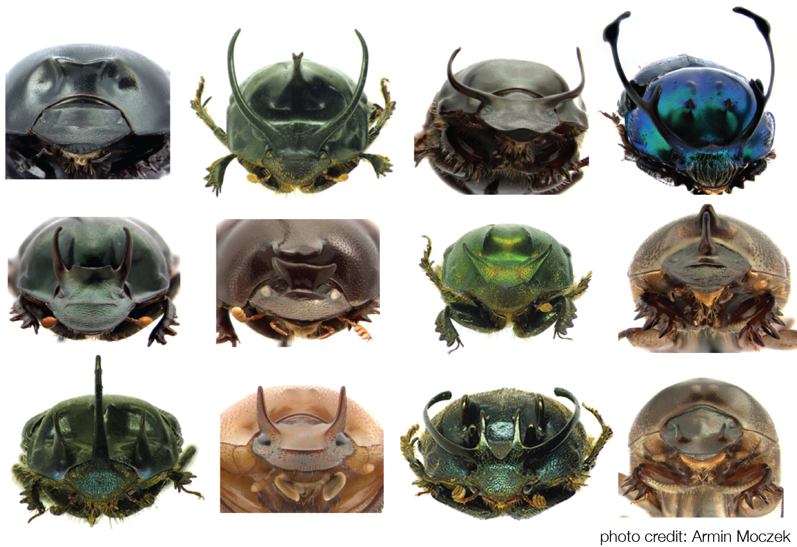
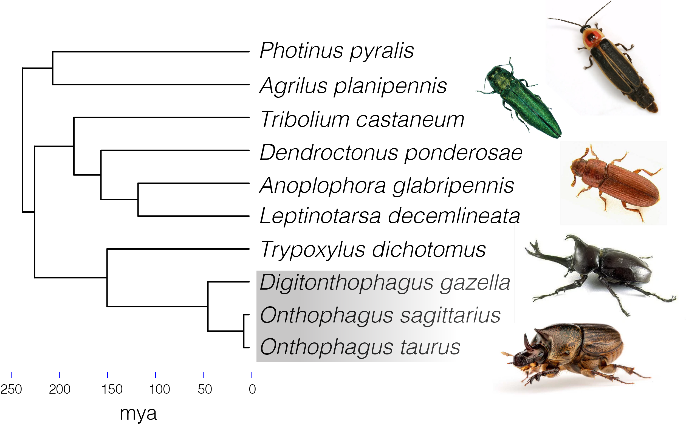
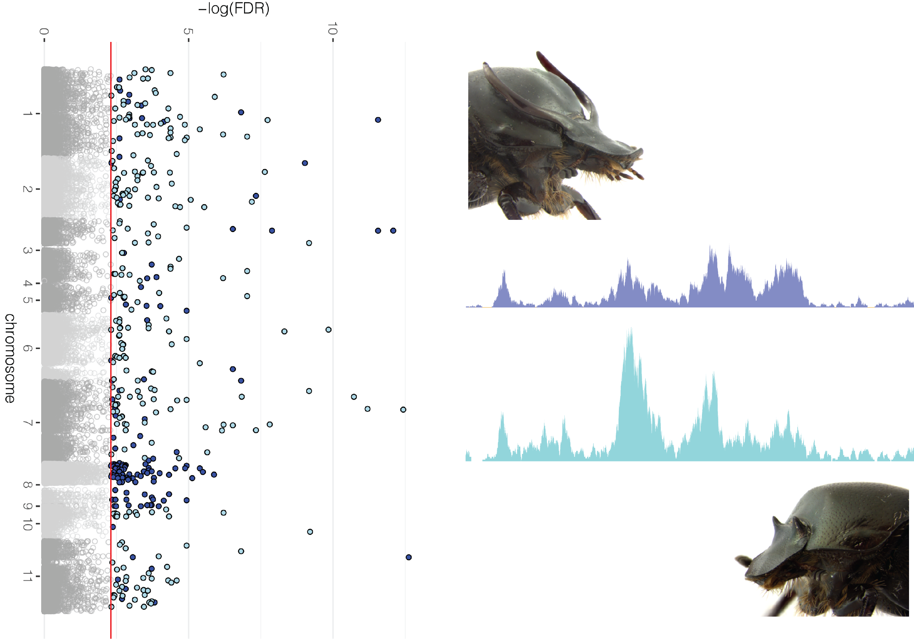
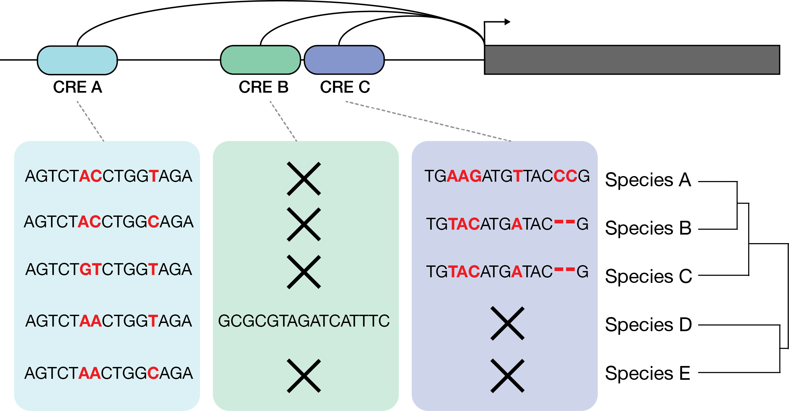
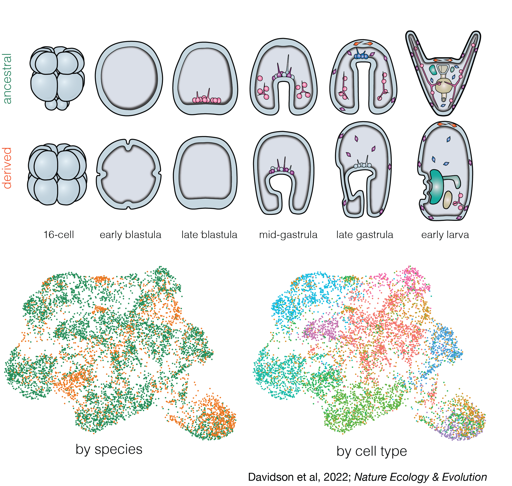
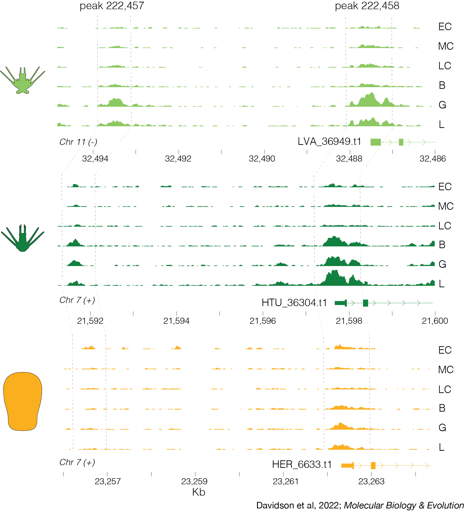
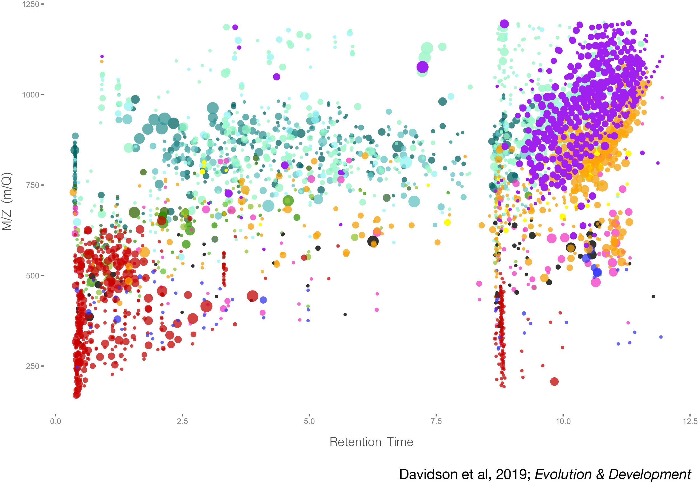
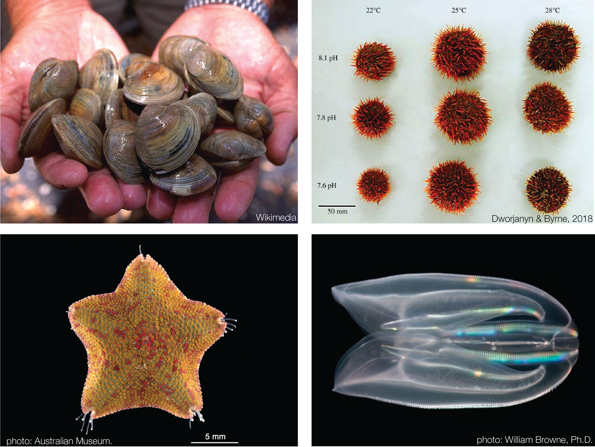

Presently, I am working in Amin Moczek’s lab as an NSF Postdoctoral Research Fellow in Biology. My research focuses on the role of cis-regulatory elements in the evolution and development of novel structures, plasticity, and gene regulatory networks (GRNs). To do this, I am studying the regulatory mechanisms driving beetle head horn development and diversification.
Evo-Devo of Novel and Adaptive Traits
Beetle horns exhibit an extraordinary degree of inter- and intra-specific variation. Still, the contribution of regulatory elements to the development and diversification of these structures is largely unknown. I am combining functional genomics approaches like ATAC and RNA-seq, comparative genomics, and developmental nutrition assays to characterize how environmental and genetic signals are integrated into developing head horns, and how these mechanisms co-vary among species.

Evolutionary Genomics of Dung Beetles & Coleoptera
I am leading a project centered on the assembly, annotation, and analysis of several chromosome-level dung beetle genomes in an effort to understand the genomic basis for adaptations associated with their unique ecology and nutritional plasticity. I am also carrying out comparative genomic analyses with other beetle species to characterize gains, losses, and changes to coding and non-coding loci across Coleoptera.

Evolvability and Plasticity of Developmental GRNs
The evolutionary lability of traits is in part dependent on the genetic networks controlling their development. I am combining genetic knockdowns of known head horn development genes with regulatory element analysis to better understand the regulatory architecture governing the development and plasticity of beetle horns. Ultimately, these experiments are providing insight into the flexibility and constraints associated with GRNs, their regulatory inputs and outputs, and the evolution of complex traits.

Cis-Regulatory Element Evolution Across Metazoa
Thanks to advances in sequencing technology, high-quality genomes are routinely assembled for species across the tree of life. As a result, large-scale comparative analyses of regulatory elements are now possible. I am quantifying the degree of conservation and diversification of regulatory elements across multiple disparate animal lineages to characterize principles and patterns of regulatory element evolution. This includes lineage-specific regulatory element gains, losses, and sequence changes, and how these features compare to the coding sequences whose expression they are regulating.

My dissertation work in Greg Wray's group focused primarily on the genomic and regulatory drivers of developmental life history evolution in sea urchins. Here, I applied a variety of functional genomic and developmental
techniques to better understand changes in cell fate specification and gene networks associated with the evolution of non-feeding development (see timecourse of H. erythrogramma development below).
Evolution of Embryonic Specification and Gene Networks
One of my major research interests is the evolution of early developmental mechanisms and their contribution to organismal diversity. In the past, my work has applied a range techniques including de-novo genome assembly and alignment, ATAC-seq, single cell RNA-seq, and developmental assays to better understand how embryogenesis and cell fate specification has evolved during life history evolution in H. erythrogramma. Important findings of this work include a demonstration of how natural selection can rapidly rewire developmental GRNs and that even some of the most highly conserved developmental network interactions remain evolvable under appropriate ecological conditions.

Davidson et al, 2022. Nature Ecology & Evolution
Comparative Echinoid Genomics and Gene Regulation
An explosion of high-quality echinoid genomic resources now permits high-resolution analysis of coding and non-coding regions across species. I am actively applying comparative and functional genomic techniques to better characterizing how sea urchin genomes evolve, species diversify, and the role regulatory elements play in these processes. In the past I have applied chromatin accessibility assays and tests for positive selection with chromosome-level genome assembly, annotation, and alignment to show how selection can efficiently change regulatory element sequence and function to modify transcriptional regulation across sea urchin species.

Davidson et al, 2022. Molecular Biology & Evolution
Ketchum, Davidson, et al, 2022. Genome Biology & Evolution
Davidson*, Guo*, et al, 2020. Genome Biology & Evolution.
Evo-Devo and Metabolic Regulation
An important but often neglected contributor to developmental evolution is metabolic regulation and physiology. I am interested in understanding how changes in metabolite utilization and diversity relate to the evolution of developmental phenotypes using high-throughput technologies. My past work applied lipid and proteomic mass spectrometry to better understand how rapid changes to developmental timing and morphogenesis are powered via changes in metabolism and offspring provisioning. Contrary to past predictions, this work demonstrated that the evolution of lecithotrophic development in H. erythrogramma is not a simple scaling up of egg metabolite content, but instead involves a qualitative shift in the composition of lipid types and key metabolic enzymes.

Davidson et al, 2019. Evolution & Development.
Other Projects
I have led and collaborated on several other related projects including developmental
transcriptomics of ctenophores and starfish, genome assembly and analysis of clams, and gene expression analysis of sea
urchin ocean acidification stress. If you have ideas for a possible collaboration, please reach out!

Song et al, 2021. BMC Biology
Byrne et al, 2021. Marine Genomics
Devens*, Davidson*, et al, 2020. Molecular Ecology
Byrne et al, 2020. DNA Research
Davidson et al, 2017. Molecular Reproduction & Development.